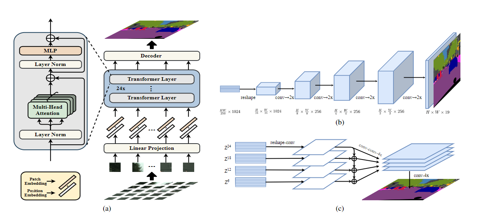
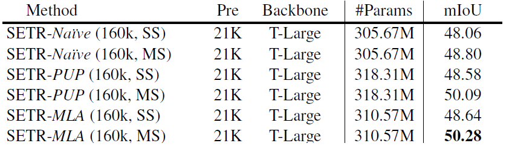
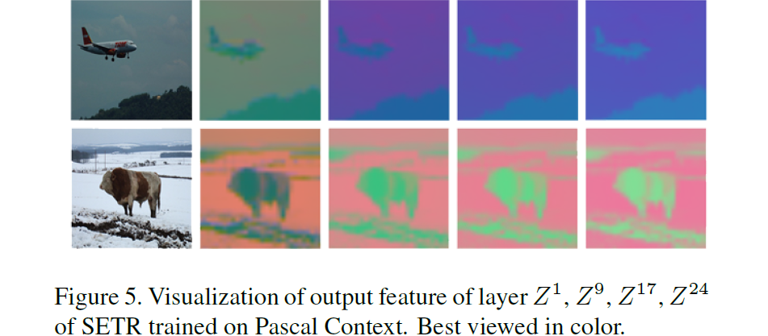

SETR
基础信息
论文题目：Rethinking Semantic Segmentation from a Sequence-to-Sequence Perspective with Transformers
文章链接：https://arxiv.org/abs/2012.15840
发表时间：2020-12 (2021 CVPR)
背景
语义分割网络需要进行像素的分类，为例保证物体边缘像素被正确分类，需要很大的感受野支持，典型的语义分割Encoder-Decoder结构以多次下采样损失空间分辨率为代价来抽取局部/全局特征。网络Layer一旦固定,每一层的感受野是受限的,因此要获得更大范围的语义信息,理论上需要更大的感受野即更深的网络结构。
如何既能够抽取全局的语义信息,又能尽量不损失分辨率,一直是语义分割的难点。
创新点简介
SETR使用transformer设计了一个端到端的语义分割网络，首先将原图切割为若干 16x16 个窗口，把其中的像素进行线性映射，得到一维编码，然后使用24层transformer的编码器来完成对于图像特征的提取，然后使用卷积做上采样操作，得到最终结果。
详细内容

本文模型的整体结构是一个ViT（图中 a 结构）+Decoder（图中b,c结构，一种是上采样形式，一种是拼接型）
图像编码
- 将HW3的图像序列化为 256个H/16W/163的patch。transformer的输入sequence length就是H/16*W/16；
- 向量化后的patch 经过Linear Projectionfunction得到向量ei
- 加入位置编码position embedding, 得到Transformer的输入Ei=ei+pi
Transformer
这里的Transformer 只有 encoder结构，每个encoder层由多头注意力、LN层、MLP层构成。图像编码结构对应第一层输入Z0, 设一共有L层encoder，每一层encoder都将经过如下的步骤。
- 生成(k, q, v), 注意这里的WQ 和 WK 维度要相同，WV 则决定了输出的维度。
query=Zl−1WQ,key=Zl−1WK,value=Zl−1WV
- 计算 Self-attention (SA), 残差 + 加标准的softmax(QKT)V
SA(Zl−1)=Zl−1+softmax(dZl−1WQ(ZWK)T)(Zl−1WV)
- 多头自注意力就是重复计算了多个SA结构，即如下公式，其中WO∈Rmd×C， 将多头注意力拼接的矩阵变回输入时的RL×C
MSA(Zl−1)=[SA1(Zl−1);SA2(Zl−1);...;SAm(Zl−1)]WO
- 经过MLP得到输出
Zl=MSA(Zl−1)+MLP(MSA(Zl−))∈RL×C
Decoder
本文提出了三种Decoder设计：
-
Naive upsampling （粗糙的上采样 SETR-Na¨ıve）
首先将最后一次Transformer Encoder的输出，经过映射调整通道数为分类数，之后经过 1 × 1 卷积 + 同步正则化 (w/ ReLU) + 1 × 1 卷积的管道，最后经过双线性上采样恢复原分辨率。
-
Progressive UPsampling（PUP）
即上图中的b结构，交替使用卷积层和两倍上采样操作。为了从H/16 × W/16 × 1024 恢复到H × W 需要4次操作, 以恢复到原分辨率。
-
Multi-Level feature Aggregation (MLA)
首先将Transformer的输出{Z1,Z2,Z3…ZLe}均匀分成M等份,每份取一个特征向量。如下图,24个transformer的输出均分成4份,每份取最后一个,即{Z6,Z12,Z18,Z24} .后面的Decoder只处理这些取出的向量。这四成特征经过reshape从(H × W)/256 × C 变为 H/16 × W/16 × C, 在经过（1 × 1, 3 × 3, 3 × 3）组成的三层卷积，进过4倍的上采样，自上而下的信息融合，注意处于下面的层拥有所有上层的信息，然后再进行拼接，最后再通过3x3的卷积操作，进行倍上采样得到最终结果。（这其实和残差有着类似的地方）。

优点
是语义分割领域的一次创行，将transformer引入到了语义分割领域中。
存在的问题
- 切割的窗口过大，语义信息不精准。
- 24层的Encoder 结构比较多余，通过作者的可视化结果们可以看到，到后面的特征图基本上变化非常小。Z1,Z9,Z17,Z24 分别表示第1层，第9层，第17层，第24层卷积的输出结果。

参考
https://zhuanlan.zhihu.com/p/353116737